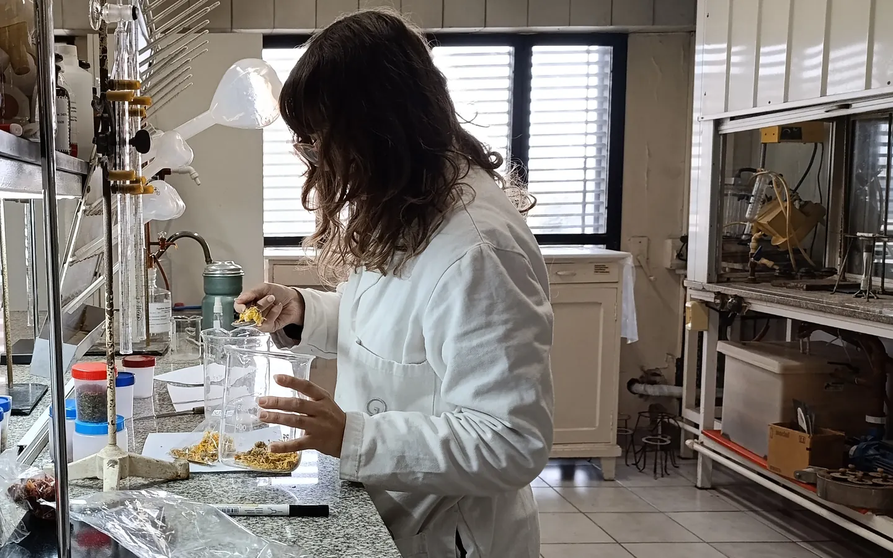

Laboratorio
Análisis de gluten, metodología oficial y presentación de muestras.

Pedir turno
Escribí a laboratorio_ia@rosario.gov.ar indicando:
- Razón social
- Motivo
- Trámite ASSAL
- Cantidad y descripción de muestras
Recepción de muestras
Agua y TrichinellaSin turno, de 8 a 12 hs
GlutenCon turno previo, desde el primer día hábil del mes
Análisis de gluten
Método ELISA R5: sándwich para gluten intacto y competitivo para hidrolizado.
Otros análisis
- Potabilidad de agua
- Microbiológicos
- Fisicoquímicos
- Trichinella spiralis